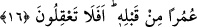

16. (Yine) de ki: “Eğer Allah dileseydi ben size onu okumazdım, O da size onu
bildirmezdi. Bundan önce aranızda bir ömür boyu bulundum. Hâlâ düşünmüyor
musunuz?”
Yine “de ki: “Eğer Allah” Kur’ân’dan bana vahyedileni size okumamamı “dileseydi
ben size onu okumazdım.” Çünkü ben bir ümmiyim, okuma ve tilâvet bilmem. Nitekim
Kur’an bana ilk nâzil olduğunda Cebrâil ile olan hâlim de böyleydi. O zaman “Cibril
(a.s.) “Oku!” dedi. “Ben okuma bilmem.” dedim. Bunun üzerine o beni tutup sıktı,
sonra bıraktı ve “Yaratan Rabb’inin adıyla oku.” (el-Alak, 80/1) dedi. O beni okur
haline getirdiği için okudum. Allah okumamamı dileseydi ben de onu size
okuyamazdım.”[30]
Anlatılır ki bazı inkarcılar, ümmî şeyhlerden birisinden ısrarla vaaz etmesini isterler.
Nasıl olsa vaaz edemeyip rezil olacağı zannındadırlar. Çünkü kendisi Arapça
bilmediğinden güzel vaaz ve nasîhat edemiyecektir. Bunun üzerine şeyh kederli bir
şekilde uykuya dalar. Rüyasında Rasûlullah (s.a.) bu hususta ona izin verir. Ertesi gün
şeyh vaaz ve nasihat meclisine oturur. Her türlü tefsir ve te’vilden bahsettikten sonra
şöyle der: “Acem olarak yattım, Arap olarak kalktım.” İşte bu Allah’ın bir lütfudur. O
her şeye kadirdir.
Hâfız şöyle der:
Rûhu’l-kudüs (Cebrâil)’ün feyzi eğer imdada yetişirse
Başkaları onu Mesih (a.s.)’ın eylediğini düşünürler
“O da size onu bildirmezdi.” yani, Allah benim lisânımla Kur’an’ı size bildirmez ve
onu size asla duyurmazdı. “Bundan” Kur’an inzâl edilmeden “önce aranızda bir ömür
boyu” Ebü’l-bakâ’nın beyânına göre bir ömür mikdarı veya bir ömür müddeti,
Şeyhzâde’nin beyânına göre uzun bir müddet, yâni yıl “bulundum.” ikamet ettim, ama
ne böyle bir şey okuyor ve ne de böyle bir şey biliyordum.
Rasûlullah (s.a.), vahiy gelmeden önce onların arasında kırk sene yaşamıştır. Ondan
sonra kendisine vahiy gelmiştir. Vahiyden sonra da Mekke’de on üç yıl ikamet etmiştir.
Sonra Medine’ye hicret etmiş on sene de orada ikamet etmiştir. Altmış üç yaşında iken
de vefat etmiştir. Aralarında kırk yıl yaşayıp o müddet zarfında hiçbir ilim öğrenmemiş,
hiçbir âlim görmemiş, şiir ve hutbe söylememiştir. Sonra ise onlara öyle bir kitap
okumuştur ki onun fesâhati hatiplerin tamamının fesâhatini geçmiş, her manzûm ve
mensûr söze galebe çalmış, usûl ve furû’ ilimlerinin esaslarını kendinde toplamıştır.
Öncekilerin kıssalarını, sonrakilerin haberlerini olduğu gibi açıklamıştır. Böylece onun
kendisine Allah tarafından öğretildiği, mu’cize ve hârikulâde olduğu anlaşılmıştır.
O öyle bir ümmî âlimdir ki ilim ile dopdolu